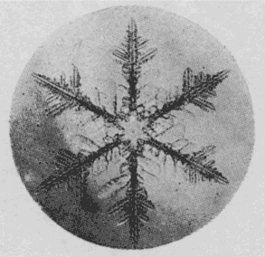
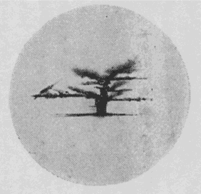

| 雪の十勝 ------雪の研究の生活------ | |
| 中谷 宇吉郎 | |
| (2013) | |
雪の十勝
――雪の研究の生活――
中谷宇吉郎
初めは慰み半分に手をつけて見た雪の研究も、段々と深入りして、算
えて見ればもう十勝岳
へは五回も出かけて行ったことになる。落付
く場所は道庁のヒュッテ白銀荘
という小屋で、泥流
コースの近く、吹上
温泉からは五丁
と距
たっていない所である。此処
は丁度十勝岳の中腹、森林地帯をそろそろ抜けようとするあたりであって、標高にして千六十米
位はある所である。
雪の研究といっても、今までは主として顕微鏡写真を撮ることが仕事であって、そのためには、顕微鏡は勿論
のこと、その写真装置から、現像用具一式、簡単な気象観測装置、それに携帯用の暗室などかなりの荷物を運ぶ必要があった。その外
に一行の食料品からお八つの準備まで大体一回の滞在期間約十日分を持って行かねばならぬので、その方の準備もまた相当な騒ぎである。全部で百貫位のこれらの荷物を三、四台の馬橇
にのせて五時間の雪道を揺られながら、白銀荘へ着くのはいつも日がとっぷり暮れてしまってからである。この雪の行程が一番の難関で、小屋へ着いてさえしまえば、もうすっかり馴染
になっている番人のＯ老人夫妻がすっかり心得ていて何かと世話を焼いてくれるので、急に田舎の親類の家へでも着いたような気になるのである。
この白銀荘は山小屋といっても、実は山林監視人であるＯ老人の家であって、普通には開放していないので、内部は仲々立派に出来ている。階下が食堂兼居室で、普通の山小屋の体裁に真中
に大きい薪
ストーヴがあって、二階が寝室になっている。この小屋の附近は不思議と風当りが少いので、下のストーヴの暖みに気を許して、寝室の毛布にくるまっていると、自分たちにはこの小屋の二階が何処
よりも安らかな眠りの場所である。着いた翌日は先
ず階下の部屋の一隅に蓆
を敷いて隙間風
を防ぎ、その上に携帯用暗幕を張って急造の暗室を作る。その中に器械を入れて来た木箱を適当に配置して現像装置だの、乾板
の出し入れの用意などをととのえる。それから食卓を一つ借り切って、これはそのまま実験台とする。雪の結晶の撮影は小屋の入口の白樺
造りのヴェランダで行うことにして、此処にも木箱を持ち出して実験台を作る。顕微鏡写真の撮影にはかなり丈夫なちゃんとした実験台が要
るのであるが、それには前にも書いたように雪のコンクリートという極めて重宝なものがある。木箱の周囲を雪で固めて、ばけつに一杯の水を流しかけると、五分も経
たぬ中
にすっかり凍りついてしまって、立派なコンクリートの実験台が出来る。顕微鏡写真装置も同様にしてこの実験台の上にくっつけてしまうのである。
十勝岳のこの附近は、雪の結晶の研究には先ず申分のない所であろう。あるいは世界でも珍らしい所ではないかという気もする。第一結晶が極めて美しく、繊細を極めたその枝の端々までが手の切れそうな鮮明な輪廓
を持っていることである。自分たちが白銀荘で見たような美しい結晶は世界中のどの観測者の写真にも見られないものであった。それから結晶の種類がまた極めて多い。普通に雪の結晶の代表と思われている六花
状のあらゆる種類の結晶は勿論のこと、余り知られていないところの樹枝状の結晶の枝が立体的に伸びているもの、それから稀
らしいとされている角錐
状の結晶、鼓型
の結晶、それが数段になっている段々鼓型などの結晶が惜し気
もなく降って来るのである。この二月には針状の結晶がそればかり三十分も続いてかなり激しい降雪となって降って来たこともあった。それから全く世界中の今までの文献に知られていないと思われる側面結晶という不思議な雪も数回観測することが出来た。

Ⅸ平面樹枝状の結晶 ×13.5

Ⅸ段々鼓の側面
今一つこの十勝岳の観測地点は気温も全く申分ない条件をそなえているのである。冬の真中で大体最低零下十五度最高零下十度位の所を毎日規則正しく変化しているのであって、気温の変化が非常に少いために、観測者の身体
が直
ぐそれに馴
れてしまって仕事が非常に楽なことである。普通に考えて零下十度というと、全く細かい研究などの出来ない寒さと思われるのであるが、此処での体験によるとこれ位の寒さが雪の研究には丁度良い気温であることが分ったのである。自分たちは別に寒さに対して特に強いとは思われないにもかかわらず、不思議とこの白銀荘で四、五日仕事を続けていると、戸外に朝から夜の十二時近くまで立って仕事をしていても別に大した寒さを感じなくなるのである。勿論一時間置き位に室内へ入って、ストーヴで暖まっては出て行くのであるが、それにしても少し妙だと我ながら感心する。生中
煖房
の設備などがないと身体の方が自然の方に適応して行くらしいのであるが、そのためには気温の変化が少いということが一つの有利な条件のように思われるのである。零下十度位になると、雪の結晶は全く安全で、どのように弄
っていても融
ける心配はないので、勝手に切ったり細工したりして調べることが出来る。一つの結晶を色々に引っ張ってこわして見るという簡単な操作だけで、昨年の冬は二核
から成る結晶の存在が確められて、従来多年の懸案となっていた三花や四花の結晶の成因がすらすらと解決出来てしまったのであるが、これもよく考えてみると、普通の地点では一番困難な実験であったのかも知れない。
雪はさすがに実によく降る。冬中何時
行って見ても、大抵毎日少しも降らないという日は滅多にない。朝起きると一面の青空で、朝日が白銀の世界を茜
色に染めているような日でも、夕方になると大抵は美事な樹枝状の結晶が細雨
のように音もなく降って来る。このような時は大抵写真を撮るには最適の条件のことが多く、つい遅くまでもひきずられがちとなるのである。
朝目を覚まして青空が見えるような日には、一同大変な元気で早くから起き出してしまう。そして急にパンを切ったり、スキーに蠟
を塗ったりして山登りの準備にかかる。何時の間
にか、天気がよくて雪の降らぬ日はふりこ
沢のあたりまでスキーに乗って、積雪上の波型を見に出かけるということに決
ってしまったのである。そして特に晴れた日にはそのまま十勝の頂上まで行程を伸ばしてしまうのである。それを楽しみにして特に助手を志願して出る学生も出て来て、大抵いつも十勝行
に人手が足らなくて困るということはない。
Ｏ老人もよく一緒に行くことが多い。かんじきを穿
かしたら誰もこの老人に敵
うものはないが、スキーはまだ始めて二年にしかならぬというので、丁度良い同行者なのである。この老人は全く一生を雪の山の中で暮して来たという実に不思議な経歴の人である。この人の話などを聞いていると、雪の山で遭難をするというようなことはあり得ないという気がするのである。一昨年の冬にも犬の皮一枚と猟銃と塩一升
だけを身につけて、十二月から翌年の二月一杯にかけて、この十勝の連峯から日高
山脈にかけた雪嶺
の中を一人で歩き廻
って来たというのである。この老人の話をきくと零下二十度の雪の中で二カ月も寝ることが何でもないことのようなのである。もっともその詳しい話を聞き出して見て驚いたのであるが、この老人はわれわれのちょっと及ばぬような練達の科学者なのである。
雪の中で寝るのに一番大切なことは焚火
をすることであるそうである。それは極めてもっともな話であるが、厳冬の雪の山で焚火をするのは決して容易な業
ではない。ところがこの老人は三段のスロープの蔭
に自分たちを連れて行って、何の雑作
もなく雪の上で大きい焚火をしてわれわれを暖めて見せてくれたのであった。風の当らぬ所を選んでこれだけの焚火があったら、なるほど雪の中で寝ることも事実普通の生理学と少しも矛盾しないのである。鋸
と手斧
とマッチが食料品と同様に雪の山では必需品であることを実例で教えてくれたのはこの老人であった。
感心したことは、この老人は出来るだけ文明の利器を利用しようとつとめることであった。魔法瓶だの気圧計だのというものには特別の興味を持ち、かつそれを利用したがるのである。とうとうその思いが一部叶って魔法瓶を買うことの出来た時の無邪気な喜びようには誰もが心を惹
かれた。気象の見方、保温の方法、器具の取扱い法、食料としての兎
の猟
り方から山草の料理法など、すべての事柄について、隅
の隅まで行き届いた細かい注意が払われていることが、聞き出すごとに分って来た。このように自分一人の体験で作り上げた科学の体系を持っていて初めて山の生活が安全に遂行されるのであろう。
今年も初霰
のたばしる音を聞くと、十勝の生活とこの老人のことが思い出される。結晶の研究にもまだ抜けた所が沢山ある。特に粉雪の結晶構造の研究にはまだ一冬はどうしてもかかる。その外
にも昨年の冬から初めて手を付けて見たスキー滑走の物理学の完成にも十勝は最も良い聖場の一つである。まだまだ数年は冬ごとに十勝へ通わねばなるまい。クリスマスの木のようなあの十勝の樹
たちに会うことも、この老人からストーヴの周
りで「カムチャツカへ歩いて行った話」を聞くことも皆楽しみの種である。
（昭和十年十二月一日）
底本：「中谷宇吉郎随筆集」岩波文庫、岩波書店
１９８８（昭和63
）年9
月16
日第1
刷発行
２０１１（平成23
）年1
月6
日第26
刷発行
底本の親本：「冬の華」岩波書店
１９３８（昭和13
）年9
月
初出：「山」
１９３５（昭和10
）年12
月1
日
※表題は底本では、「雪の十勝
」となっています。
※写真は、底本からとりました。
入力：門田裕志
校正：川山隆
２０１２年12
月15
日作成
青空文庫作成ファイル：
このファイルは、インターネットの図書館、青空文庫（http://www.aozora.gr.jp/）で作られました。入力、校正、制作にあたったのは、ボランティアの皆さんです。